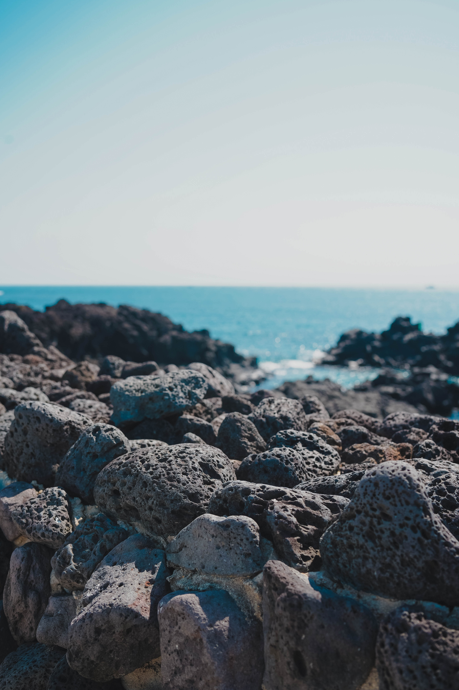
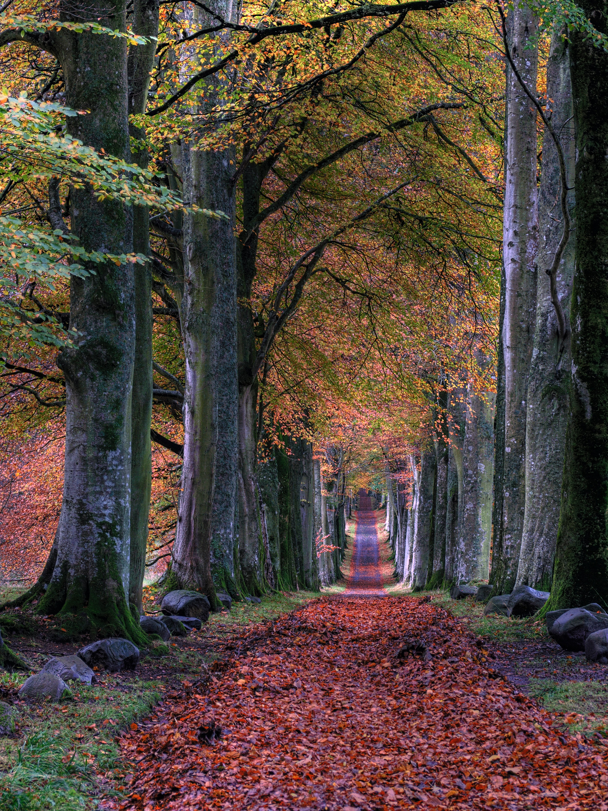
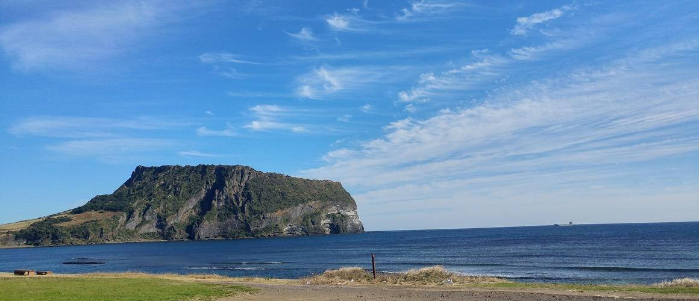

MOUNTAIN
더보기

SEA

PARK
·
BOTANIC GARDEN
MOUNTAIN
SEA
PARK
·
BOTANIC GARDEN

성산일출봉
곶자왈이란?
제주특별자치도 서귀포시
대정읍 보성리 63
곶자왈은 화산활동 중 분출한 용암류가 만들어낸 불규칙한
암괴지대로
숲과 덤불 등 다양한 식생을 이루는 곳을 말하며,‘곶’과 ‘자왈’의
합성어인 제주어이다.
즉 곶자왈이란 암괴들이 불규칙하게
널려있는 지대에 형성된 숲으로,
다양한 동·식물이 공존하며 독특한 생태계가 유지되고 있는 지역을
말한다.
중문색달해수욕장은 아름다운 해안 풍경과 야자수의 이국적인
모습으로 중문관광단지에서 시작해 천제연폭포와 대포주상절리와
이어지는 곳에 위치하고 있다.
이곳의 모래는 흑색, 회색, 적색, 백색 4가지가 섞여 있어 해가
비추는 방향에 따라 모래 해변의 색깔이 달라 보인다.
다른 해수욕장보다 파도가 잦고, 높은 편이라 서퍼들에게 인기가
많고, 국내의 가장 큰 규모의 국제 서핑 대회가 개최가 매년 6월에
개최된다.

성산일출봉은 제주도의 다른 오름들과는 달리 마그마가 물속에서
분출하면서 만들어진 수성화산체다.
화산활동시 분출된 뜨거운 마그마가 차가운 바닷물과 만나면서 화산재가
습기를 많이 머금어 끈끈한 성질을 띄게 되었고, 이것이 층을 이루면서
쌓인 것이 성산일출봉이다.
성산일출봉은 제주도의 다른 오름들과는 달리 마그마가 물속에서
분출하면서 만들어진 수성화산체다.
화산활동시 분출된 뜨거운 마그마가 차가운 바닷물과 만나면서 화산재가
습기를 많이 머금어 끈끈한 성질을 띄게 되었고, 이것이 층을 이루면서
쌓인 것이 성산일출봉이다.